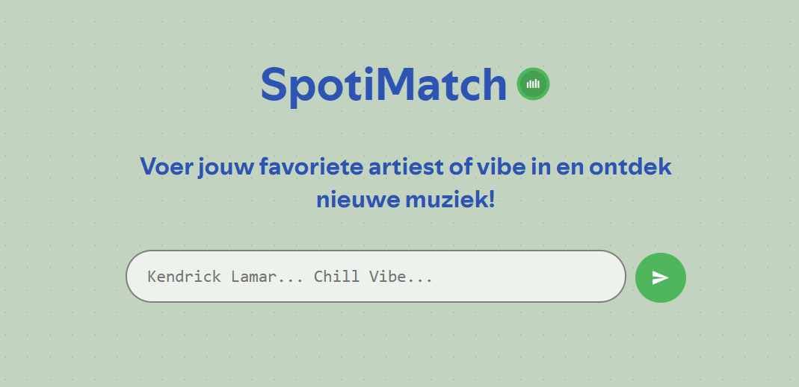

API
De kracht van API's ontdekken en toepassen

// Uitkomst
Voor API zijn we bezig geweest met het astro framework en het daarbij gebruiken van verschillende web en content API’s. Astro was nieuw voor mij, en uberhaupt frameworks in het algemeen dus was ik benieuwd hoe het zou lopen en wat ik ervan kon oppikken. Ik wilde graag met de Spotify API werken dus is mijn idee gebaseerd daarop. Mijn idee koppelt een LLM api met de Spotify api om een leuk idee neer te zetten waar je nieuwe muziek mee kan ontdekken. Ik wilde iets ontwerpen wat ik zelf zou gebruiken. Javascript blijft voor mij ook lastig maar tijdens dit vak hadden we de tijd ervoor om grotendeels daarop te focussen. Het gebruik van Astro zodra het allemaal opgezet was ging prima. Ik moet wel eerlijk zeggen dat ik niet echt componenten hebt gebruikt, hetgeen wat een belangrijk onderdeel is van het framework. Ik zou graag mijn front-end roadmap willen voortzetten met componenten/frameworks dus dat ga ik zeker nog oppakken. Ik heb er wel een leuk prototype van kunnen maken waarbij de LLM en de spotify api samenwerken om je als gebruiker nieuwe muziek te laten ontdekken. Zoals al werd gezegd was de spotify api wel echt een “pain in the ass” om mee te werken, met vele deprecated endpoints..